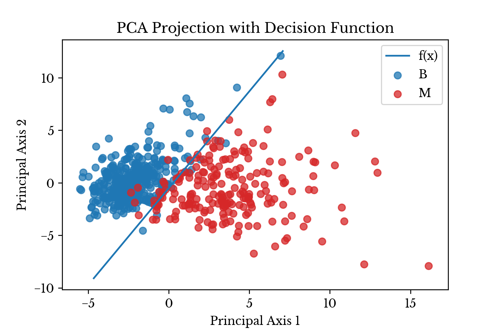

Breast Cancer Malignancy Classification using PCA and Logistic Regression
Sun, 07 Feb 2016
Computer Science, Data Science, Machine Learning, Mathematics
In this post, a linear classifier is constructed that aids in classifying fine needle aspiration (FNA) cytology results. The classifier receives a vector consisting of aggregate measurements from FNA of a breast mass. Each vector contains aggregations, over multiple cell nuclei, of the following ten measurements:
- Clump Thickness
- Uniformity of Cell Size
- Uniformity of Cell Shape
- Marginal Adhesion
- Single Epithelial Cell Size
- Bare Nuclei
- Bland Chromatin
- Normal Nucleoli
- Mitoses
The mean, standard error, and maximum are each used to aggregate the underlying measurement data. Thus, each sample is a vector \(\textbf{v} \in \mathbb{R}^{30}\). Given a vector of these measurements, the classifier determines if the breast mass is benign or malignant. The data used in this post is courtesy of UCI's machine learning repository and is
available here [1].
Data Setup
The data set contains 569 samples and 34 columns in total. The column containing the patient ID is discarded and the column containing the diagnosis is reserved as the target vector.
import matplotlib.pyplot as plt
import numpy as np
import pandas as pd
from sklearn.decomposition import PCA
from sklearn.linear_model import LogisticRegression
from sklearn.model_selection import ShuffleSplit
from sklearn.preprocessing import StandardScaler
D = pd.read_csv('wdbc.data', header=None)
A = D[range(2, 32)].values
Y = D[1].map({'M': 1, 'B': 0}).values
trn, tst = next(ShuffleSplit(1, test_size=0.15).split(A))
In the final line of code, a validation set containing ~15% of the data is reserved for model evaluation.
Preprocessing and Dimensionality Reduction
To better visualize the data, the input vectors are projected onto a lower dimensional subspace using principal component analysis (PCA). To perform PCA, first compute the mean \(\overline{v}_i\) of each input column vector \(\textbf{v}_i\). Now, consider the mean-centered data matrix
\[\displaylines{\textbf{V}=(\textbf{v}_{1}-\overline{v}_1,\textbf{v}_{2}-\overline{v}_2,\ldots,\textbf{v}_{n}-\overline{v}_n)^{T}}\ .\]
Next, consider the matrix
\[\displaylines{\textbf{C}=\frac{1}{n}\textbf{V}^{T}\textbf{V}}\ ,\]
where \(n\) is the number of records. The principal components are the eigenvectors of this matrix \(\textbf{C}\), sorted in descending order by their corresponding eigenvalues \(\lambda_{i}\). By preserving the first \(p\) principal components, the amount of variability in the original data that is preserved in the transformation is:
\[\displaylines{\sum\limits_{i=1}^{p}{\lambda_{i}}/\sum\limits_{i=1}^{n}{\lambda_{i}}}\ ,\]
where \(n\) is the total number of eigenvalues of the matrix \(\textbf{C}\). These \(p\) components are treated as basis vectors and are used to transform the original data from \(\mathbb{R}^{n}\) to \(\mathbb{R}^{p}\). All of this can easily be performed using
scikit-learn as follows:
# %% Scale and reduce data using PCA
ss = StandardScaler().fit(A[trn])
SA = ss.transform(A)
pca = PCA(n_components=2).fit(SA[trn])
DRA = pca.transform(SA)
#Display % variance explained by first 2 components
vsum = sum(pca.explained_variance_ratio_)
print('Explained Variance {:.2%}'.format(vsum))
Note that prior to performing PCA, the data is standardized. Standardization essentially converts each column to a z-score by subtracting the mean from each column vector and then dividing each column by its standard deviation. This is an important step to perform before PCA as columns with larger scales naturally compose more of the variance. Standardizing puts each column on the same scale, preventing any single column from dominating the result.
In this dataset, the first two components explains 45.13% and 19.11% of the variance in the input data respectively. In total, 63.10% of the variance in the original data is explained.
x = np.random.rand(32, 4)
V = x - x.mean(0)
C = V.T @ V
l, v = np.linalg.eigh(C)
pc1 = v[:, l.argsort()[::-1]]
pc2 = PCA().fit(x).components_.T
print((np.isclose(pc1, pc2).all(0) | \
np.isclose(pc1, -pc2).all(0)).all())
Alternatively, the principal components can be computed using the eigenvalue decomposition of the matrix \(\textbf{C}\). The above code block computes the components both using
eigh and using
scikit-learn and compares them. The final check is somewhat complex, because
scikit-learn uses the singular value decomposition (SVD) to compute the components. SVD suffers from sign indeterminacy, and so the comparison checks that all components match only up to their sign. The function
eigh is used instead of
eig, because the matrix \(\textbf{C}=\textbf{V}^{T}\textbf{V}\) is symmetric and hence hermitian.
Classification with Logistic Regression
Next, a logistic regression is performed on the reduced data. The purpose of the regression is to find a linear function which can predict whether an input sample belongs to class 0 (benign) or class 1 (malignant). The decision function is defined as follows:
\[\displaylines{f(\textbf{x})=a_{0}+\sum\limits_{i=1}^{2}{a_{i}x_{i}}}\ .\]
The classifier determines which class an input belongs to as follows:
\[\displaylines{g(\textbf{x})=\begin{cases} 0 & \frac{1}{1 + e^{-f(\textbf{x})}} < 0.5 \\ 1 & \frac{1}{1 + e^{-f(\textbf{x})}} \geq 0.5 \end{cases}}\ ,\]
where 0 and 1 correspond to benign and malignant respectively. The function \[\displaylines{\frac{1}{1+e^{-x}}}\] is known as the
logistic function, hence the name
logistic regression.
The following python code creates the classifier object, computes the coefficient vector \(\textbf{a}\), and displays the training and validation accuracy.
LR = LogisticRegression()
LR.fit(DRA[trn], Y[trn])
# Compute the slope and intercept
m = -LR.coef_[0, 0] / LR.coef_[0, 1]
b = -LR.intercept_[0] / LR.coef_[0, 1]
# Compute training and validation accuracy
print('Trn: {:.2%}'.format(LR.score(DRA[trn], Y[trn])))
print('Tst: {:.2%}'.format(LR.score(DRA[tst], Y[tst])))
Since the reduced data matrix is two dimensional, the decision function can be represented in the familiar slope intercept format
\[\displaylines{y = mx + b}\ ,\]
where \(m\) is the slope and \(b\) is the intercept. In this case, \(m=1.84414\) and \(b=-0.50989\).
Results
Next, the projected results are plotted on a scatter plot with the estimated decision function superimposed over the data.

Figure 1: Transformed Data Shown with Least Squares Line
In Figure 1, the malignant class is colored red while the benign class is colored blue. The results of model evaluation are shown in Table 1.
| Set | Accuracy |
|---|
| Train | 94.62% |
| Test | 97.67% |
Table 1: Model Evaluation Results
The plot in Figure 1 is produced using
matplotlib. The following code is used to produce the above plot:
# %% Plot the results
fig, ax = plt.subplots()
# Make scatter plots
ax.scatter(DRA[Y == 0, 0], DRA[Y == 0, 1], color='C0', alpha=0.75, label='B')
ax.scatter(DRA[Y == 1, 0], DRA[Y == 1, 1], color='C3', alpha=0.75, label='M')
# Plot decision function
x = np.linspace(*ax.get_xlim())
y = m * x + b
yl = ax.get_ylim()
yr = ((y >= yl[0]) & (y <= yl[1])).nonzero()[0]
ax.plot(x[yr], y[yr], label='f(x)')
# Formatting
ax.set_xlabel('Principal Axis 1')
ax.set_ylabel('Principal Axis 2')
ax.set_title('PCA Projection with Decision Function')
ax.legend(loc='best')
plt.show()
As can be seen, the logistic regression produces a linear decision boundary that separates the benign samples from the malignant ones with relative accuracy.
References
- Wolberg, William H., and Olvi L. Mangasarian. "Multisurface method of pattern separation for medical diagnosis applied to breast cytology." Proceedings of the national academy of sciences 87.23 (1990): 9193-9196.
- Hastie, Trevor, et al. "The elements of statistical learning: data mining, inference and prediction." The Mathematical Intelligencer 27.2 (2005): 83-85.
{kind=link}